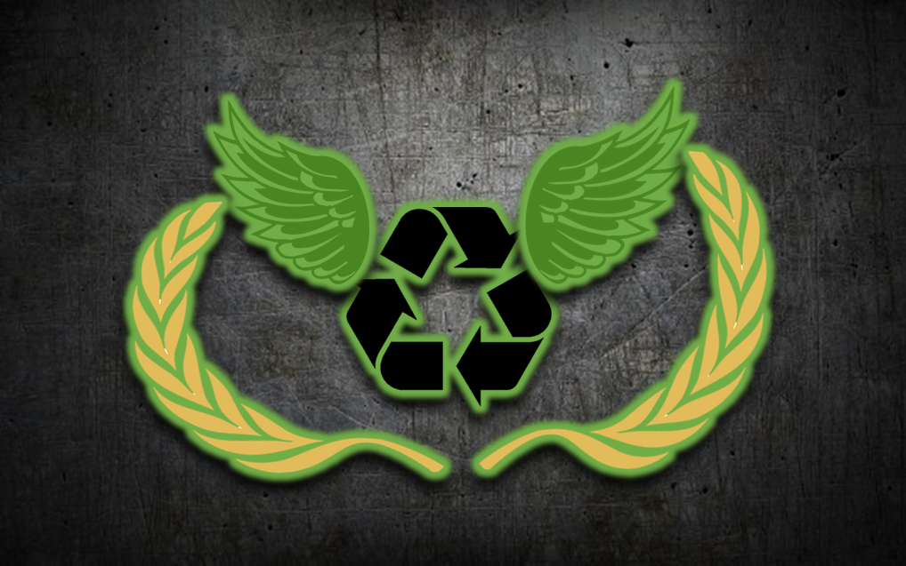
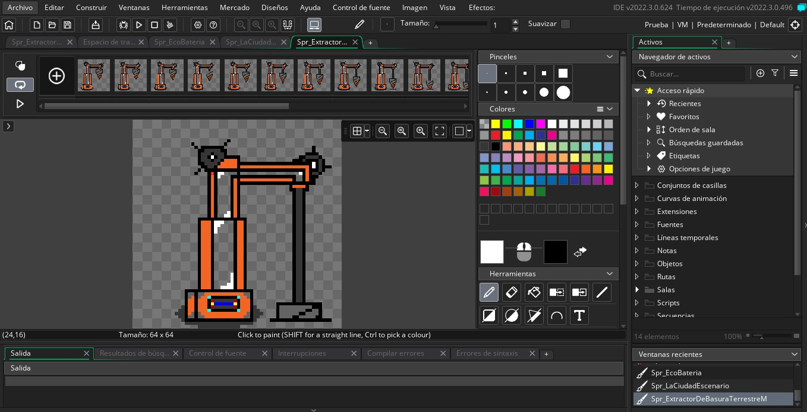

Trash Worker
Trash Worker
"Limpiar el planeta nunca fue tan divertido"
Trash Worker
Se trata de un videojuego en el que la recolección y la mejora de tu equipamiento, será la clave, embárcate en una aventura en donde el planeta a sido devastado por la contaminación, tu deber como “Purificador” es limpiar la tierra con ayuda de tus herramientas, sin embargo, no será cosa fácil, pues “Los Apestosos” son las criaturas que moran en la vasta contaminación existente, defiende tus recolectores, vende la basura recogida o reutilízala para mejorar tus productos.
Y tú, ¿Crees estar listo para esta gran aventura?
Compatibilidad con dispositivos
La beta será lanzada principalmente en PC, sin embargo, una vez se termine el juego base, será compatible con los siguientes dispositivos:
- Telefonos Android/IOS
- Tablets
- Laptops
- Smart TV (posiblemente)
¿Cómo ayudarnos?
Siempre es bueno una mano de un purificador más, por eso, ayúdanos con tu granito de arena, se planea llegar a la meta de $10,000 para sustentar los gastos del videojuego, pero no te iras con las manos vacías, pues si te conviertes en colaborador, ¡recibirás grandes recompensas!, recuerda visitar la ventana de "Apoyanos"
¿Tienes alguna idea?, !Nos encantaria saberla!
Al comentar alguna idea que gustes, nos ayudas a hacer de este juego algo mejor y mas llamativo <3
| Actividad | Progreso |
|---|---|
| Planeación | Finalizada |
| Convenios | Finalizada |
| Adquisición de material | Finalizada |
| Diseño | Finalizada |
| Programación | Finalizada |
| Pruebas Alfa | Finalizada |
| Pruebas Beta | En progreso... |
| Salida oficial | Pendiente |
Un pequeño abrir de ojos
Antes de que te vayas, queremos hacerte ver un pequeño repaso de la situación actual con el ambiente y la contaminación, este proyecto no es solo un juego, es una manera de hacer ver a los jóvenes, lo importante que es cuidar los ecosistemas, pues son el fruto de las generaciones futuras, disfruta del video:
Referente a Trash Worker

Conoce a nuestro equipo
Familiarízate con nosotros y conoce a los desarrolladores detrás de Trash Worker
Leer más
Proceso de desarrollo
Conoce como se le da vida a nuestro videojuego y el proceso que este conlleva
Leer más
